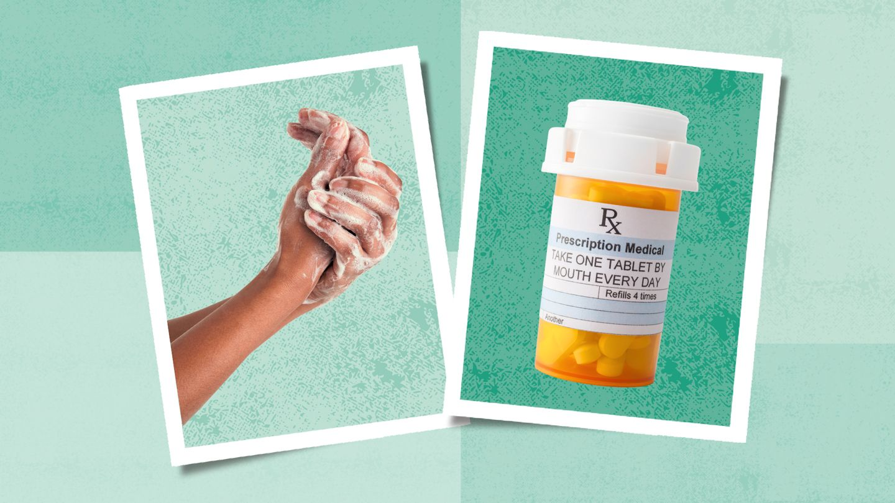

Treating Pneumonia
Treatment for pneumonia depends on your risk factors and how serious
your pneumonia is. Many people who have pneumonia are prescribed
medicine and recover at home. You may need to be treated in the hospital
or an intensive care unit (ICU) if your pneumonia is serious.
Your healthcare provider may prescribe some of the following medicines
to treat your pneumonia at home or at the hospital, depending on how
sick you are.
Management at home
If your pneumonia is mild, your provider may prescribe medicines or
suggest over-the-counter medicines to treat it at home.
-
Antibiotics may be prescribed for bacterial pneumonia. Most people
begin to feel better after one to three days of antibiotic
treatment. However, you should take antibiotics as your doctor
prescribes. If you stop too soon, your pneumonia may come back
-
Antiviral medicine is sometimes prescribed for viral pneumonia.
However, these medicines do not work against every virus that causes
pneumonia.
- Antifungal medicines are prescribed for fungal pneumonia.

Treatment
-
Antibiotics: These medicines are used to treat bacterial
pneumonia. It may take time to identify the type of bacteria causing
your pneumonia and to choose the best antibiotic to treat it. If your
symptoms don't improve, your doctor may recommend a different
antibiotic.
-
Cough medicine: This medicine may be used to calm your cough so
that you can rest. Because coughing helps loosen and move fluid from
your lungs, it's a good idea not to eliminate your cough completely.
In addition, you should know that very few studies have looked at
whether over-the-counter cough medicines lessen coughing caused by
pneumonia. If you want to try a cough suppressant, use the lowest dose
that helps you rest.
-
Fever reducers/pain relievers: You may take these as needed
for fever and discomfort. These include drugs such as aspirin,
ibuprofen (Advil, Motrin IB, others) and acetaminophen (Tylenol,
others).